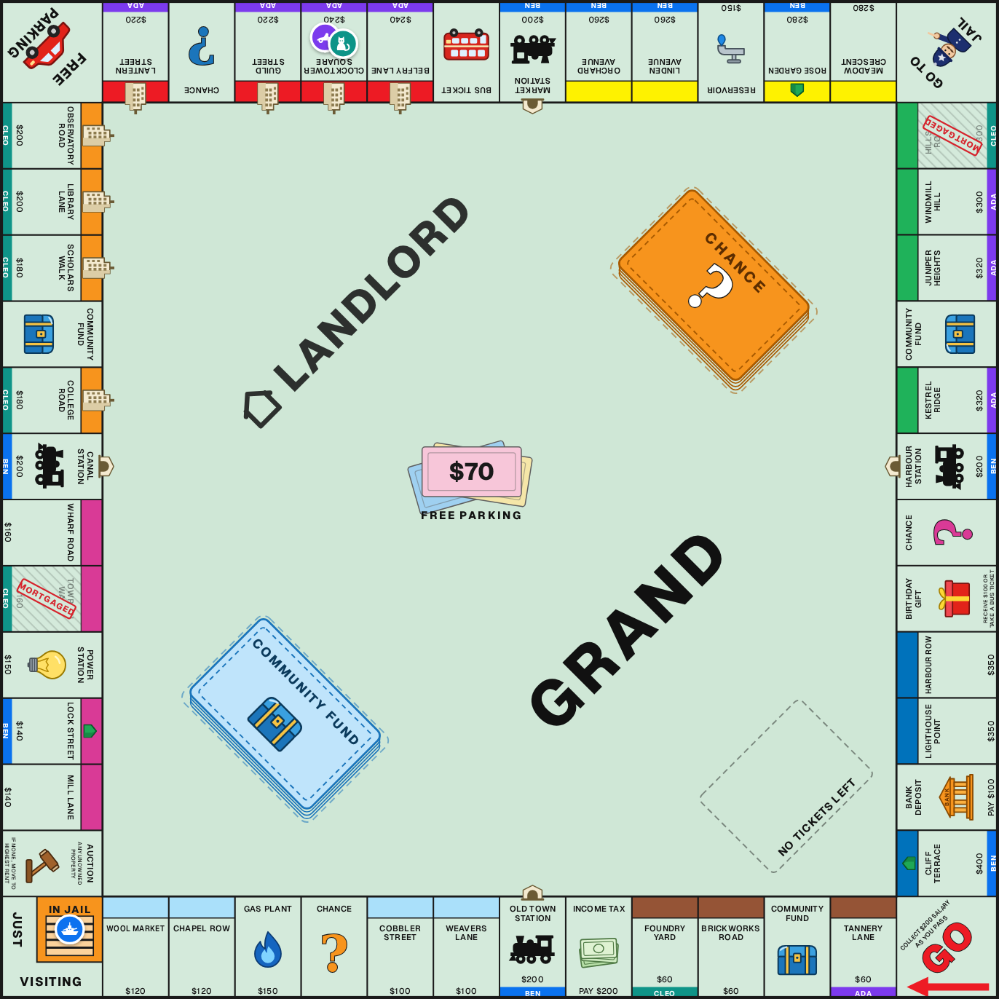

Landlord
Who would have won?
Enter any board game position, pick your house rules and simulate thousands of continuations in the browser.

Enter any board game position, pick your house rules and simulate thousands of continuations in the browser.